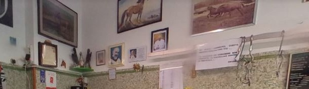
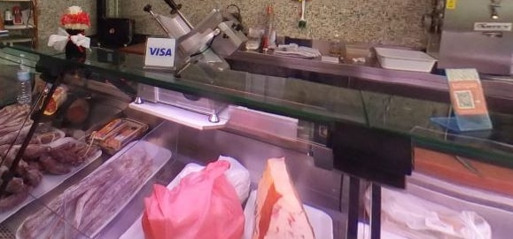
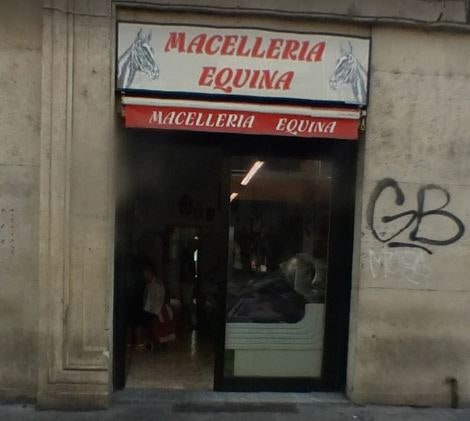

Bovisa, Milano · Via Luigi Mercantini 5
Gestita
da sole donne.
È come si descrivono loro. E l'altra cosa che le distingue è altrettanto semplice: al banco c'è un animale solo.
Un solo animale
Qui non c'è
«anche» il cavallo.
La maggior parte delle macellerie tiene la carne equina in un angolo del banco, accanto a tutto il resto. Qui è il contrario: è una macelleria esclusivamente equina, e non c'è nient'altro.
Vuol dire che chi sta dietro il banco fa quel mestiere lì tutti i giorni, e che i tagli non sono un ripiego di fine settimana: sono il lavoro.
«Macelleria esclusivamente equina, a gestione familiare. Qualità della carne molto buona. Piccola realtà che senza dubbio merita di essere valorizzata.»
Emanuele Mini, recensione Google

Chi c'è dietro il banco
Antonella
e Giulia.
La macelleria è uno dei mestieri con l'immagine più maschile che ci siano. Questa è tenuta da due donne, ed è la prima cosa che scrivono di sé.
«Macelleria nel cuore di Milano, gestita da sole donne. Dicono di noi: la nostra carne è un'eccellenza garantita.»
Dalla loro pagina Instagram
Nelle recensioni tornano più o meno sempre le stesse due parole: gentilezza e simpatia. «La gentilezza e la cortesia si riescono a toccare», scrive uno.

Il banco
Basta chiedere.
Molti non hanno mai comprato carne di cavallo e non sanno da dove cominciare. Non serve saperlo: si dice per quante persone e come la si vuole cucinare, e al taglio giusto ci arrivano loro.
È una bottega piccola, di quartiere, a pochi minuti dal campus del Politecnico di Bovisa. Si compra e si porta a casa.
Chiama la macelleria
Recensioni Google
4,7 su 46.
«Macelleria esclusivamente equina, a gestione familiare. Qualità della carne molto buona, prezzi nella media, servizio cortese e attento. Piccola realtà che senza dubbio merita di essere valorizzata.»
Emanuele Mini
«Fantastica! La gentilezza e la cortesia si riescono a toccare. La carne è fresca, curata e gestita con professionalità.»
Luciano Carini
«Carne di ottima qualità, prezzi ottimi, servizio ottimo e simpatico.»
Da una recensione Google
Dove siamo
Bovisa.
Via Luigi Mercantini 520158 Milano
- lunedì9–13
- martedì8:30–13 · 16–19:30
- mercoledì8:30–13 · 16–19:30
- giovedì8:30–13 · 16–19:30
- venerdì8:30–13 · 16–19:30
- sabato8:30–13 · 16–19
- domenicachiuso
Acquisti in negozio · ritiro in negozio
La mappa è di Google: aprendola, Google riceve il tuo indirizzo IP e può usare i suoi cookie.
Domande
Vendete solo carne di cavallo?
Sì. È una macelleria esclusivamente equina: al banco c'è un animale solo, e nient'altro.
Chi c'è dietro il banco?
Antonella e Giulia. È una bottega a gestione familiare, e come scrivono loro stesse è «gestita da sole donne».
Non ho mai comprato carne di cavallo: come faccio?
Si chiede. Basta dire per quante persone e come la si vuole cucinare, e al banco vi indirizzano loro sul taglio giusto.
Quando siete aperte?
Da martedì a sabato 8:30–13, e il pomeriggio 16–19:30 (il sabato fino alle 19). Il lunedì solo la mattina, 9–13. Domenica chiuso.
Dove siete esattamente?
In Via Luigi Mercantini 5, in Bovisa, a poche centinaia di metri dal campus del Politecnico.